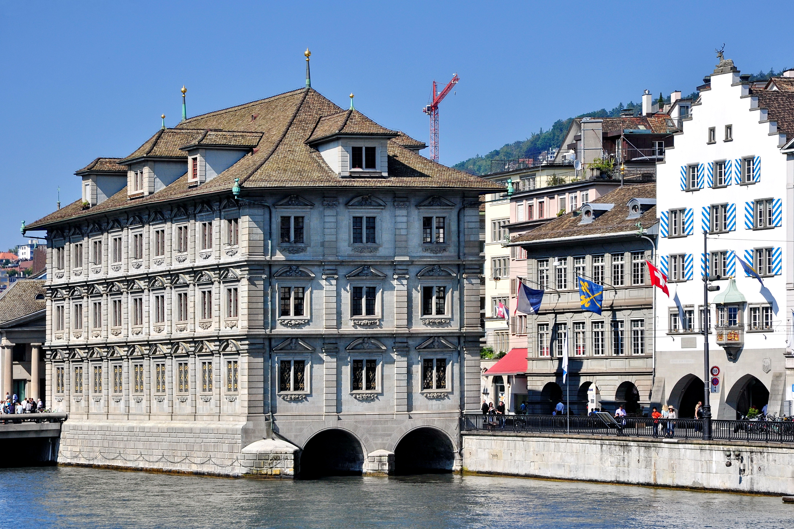
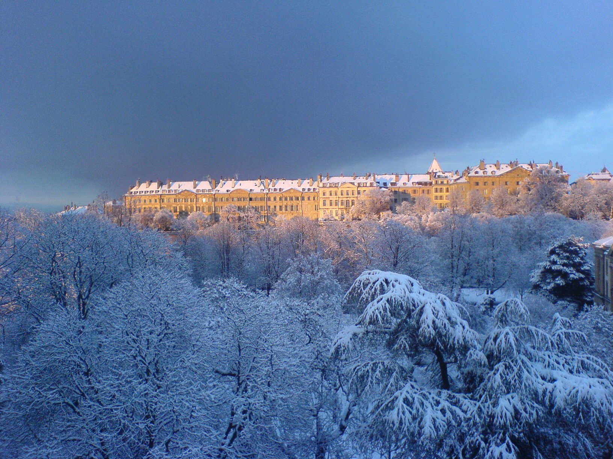
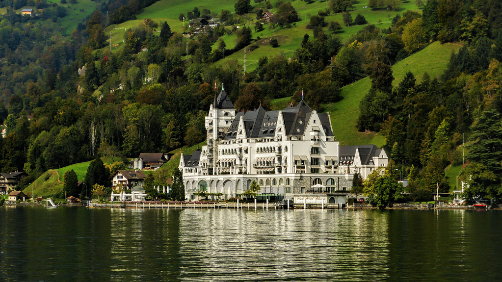
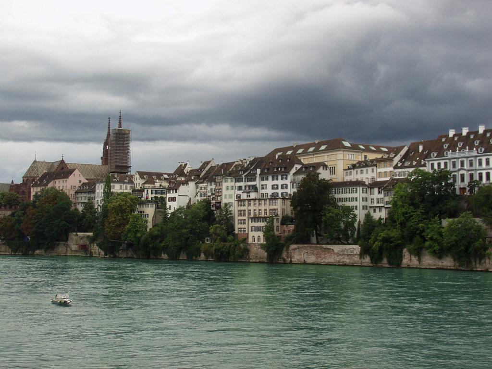
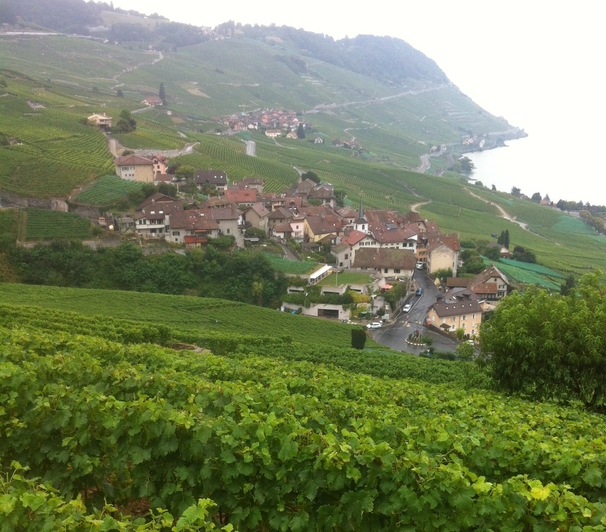

Zúrich
Fechas disponibles: 5-12 Agosto
Principal ciudad financiera del país con un encanto único. Pasea por el casco antiguo, disfruta del lago de Zúrich y descubre su animada vida cultural y comercial.


Fechas disponibles: 5-12 Agosto
Principal ciudad financiera del país con un encanto único. Pasea por el casco antiguo, disfruta del lago de Zúrich y descubre su animada vida cultural y comercial.

Fechas disponibles: 10-17 Agosto
Ciudad internacional junto al lago Lemán. Visita el Jet d'Eau, el casco histórico y los parques junto al lago en un entorno elegante y tranquilo.

Fechas disponibles: 15-22 Agosto
Una de las ciudades más pintorescas de Suiza. Recorre el Puente de la Capilla, el lago de Lucerna y disfruta de vistas a los Alpes.

Fechas disponibles: 8-15 Agosto
Ciudad cultural a orillas del Rin. Destaca por sus museos, su casco antiguo y su ambiente artístico moderno.

Fechas disponibles: 12-19 Agosto
Ciudad dinámica junto al lago Lemán. Ideal para pasear por su casco antiguo, visitar el Museo Olímpico y disfrutar de sus vistas al lago y montañas.